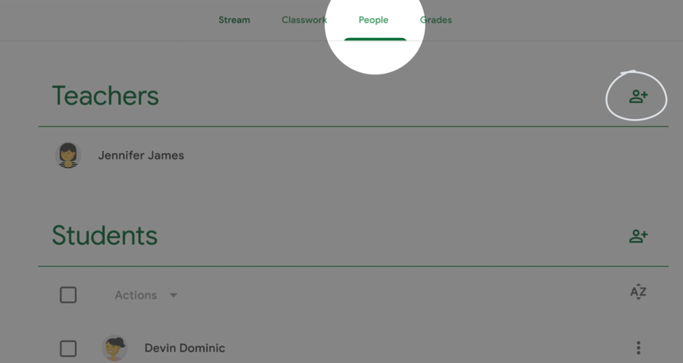
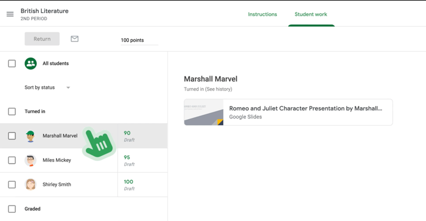

Caracteristici despre:
Pagina Stream
Pagina Classwork
Pagina People
Pagina Notes
Pagina Stream
Aceasta pagina iti ofera posibilitatea sa pui intrebari, sa interactionezi cu elevii si sa postezi teme si raspunsuri. Stream-ul este prima pagina ce se deschide dupa ce ati accesat un curs.Inchide
Pagina classwork
In aceasta pagina poti accesa toate materialele cursului. In aceasta pot fi create teme, teste sau materiale pentru elevi in timpul orelor.
Pasul 1:
Pentru asta va trebuii sa apasati pe butonul “Classwork”.
Pasul 2:
Pentru a creea materile pentru elevi apasati pe butonul “Create”.
Pentru mai multe informatii accesati “crearea unei teme”.
Pasul 3:
Pentru a accesa drive-ul apasati pe “Class driver folder”.
Pasul 4:
Pentru a adauga topice la clasa dvs, apasati butonul “create” iar dupa aceea butonul “topics”.
Pasul 5:
Pentru a creea un un document pentru elevii dvs, o posibilitate este sa apasati pe butonul “Material”.
Pasul 5:
Dupa aceea, apasand pe butonul “Topic” veti putea alege subiectul materialului dvs didactic.
Pagina People
Aceasta functie iti permite sa comunici cu elevii tai si sa invitii alte cadre didactice sa preadea cu tine.
Pentru a accesa aceasta functie, apasati butonul “People”, iar pentru a adauga persoane apasa ti pe persoana cu un plus langa aceasta de la sectiunea “Teachers”.

Pentru a exclude de la curs sau a interzice anumitor elevi sa faca comentarii:
Pasul 1:
Se va apasa pe buleta de langa numele elevilor, iar dupa acceea se va apasa pe butonul “actions”.
Pasul 2:
Pentru a trimite un email catre elev sau parintele acestuia, se va apasa pe cele 3 puncte din dreapta numelui, iar dupa accea se va alege persoana catre care se va trimite.
Pagina Stream
Aceasta pagina iti permite sa verfifici notele elevilor.
Pentru a o accesa aceasta functie apasati pe butonul “Notes”.
Pentru a verifica notele, progresul elevilor si media va puteti uita pe tabelul din stanga.
Pentru a returna elevilor cee ace au facut, se va apasa pe cel 3 puncte de langa data din acel table.
Pasul 1:
Din pagina “Classwork” se poate accesa munca elevilor dumeavoastra. Acest lucru este posibil prin apasarea pe una dintre teme, iar dupa aceea apasarea butonului “View Assignment”.
Pasul 2:
Dupa deschiderea noii ferestre web, pentru a gasi statusul elevilor dvs. avand in vedere tema veti apasa pe butonul “All”.
Pasul 3:
Pentru a verifica tema unui elev, apasa ti pe acesta, iar dupa aceea deschideti fisierul trimis de el.

Pasul 4:
Pentru a returna tema unui elev, bifati casuta de langa el, iar pentru a le trimite tuturor apasati pe caseta “all students”
Nota:
Elevii dumneavoastra nu vor putea verifica nota pana cand tema nu este returnata!
Pasul 1:
Toate temele se vor regasi pe pagina “Classwork”. Pentru a o accesa, apasati dublu click pe aceasta.
Pasul 2:
Se va apasa butonul "Creati" pentru a incepe.
Exista cateva tipuri de teme precum cele create prin "Assignments".
Pentru a crea o tema in assignments se va apasa pe butonul “Create”, iar dupa aceea pe butonul “Assignments”.
Pasul 3:
In plus, pe langa cerita propusa spre rezolvare, se pot atasa documente sau link-uri spre Youtube, documete din propiul dvs calculator sau de pe Google drive din coltul de stanga jos.
Pasul 1:
Pentru a crea o tema in quiz assignments se va apasa pe butonul “Create”, iar dupa aceea pe butonul “Quiz assignments”.

Nota:
Inainte de a se trimite testul ca trebui sa apasati pe “Blank quiz” si sa se completeze cu datele pe care doriti sa le introduceti.
Inchide
Pasul 1:
Pentru a crea un Material se va apasa pe butonul “Create”,iar dupa aceea pe butonul “Material”.
Nota:
Aceasta functie iti permite sa partajezi cu clasa documete, dar acestea nu solicita elevilor fisiere tema.
In plus, se pot atasa documente sau link uri spre Youtube, documete din propiul dvs calculator sau de pe Google drive din coltul de stanga jos.
Aceasta functie iti permite sa reutilizezi o tema dintr un alt curs de pe google classroom. (Reuse post)
Pasul 1:
Pentru a folosia functia Reuse post se va apasa pe butonul “Create”,iar dupa aceea pe butonul “Reuse post”.
Pasul 2:
Se va alege cursul de la care doresti sa reutilizezi tema.